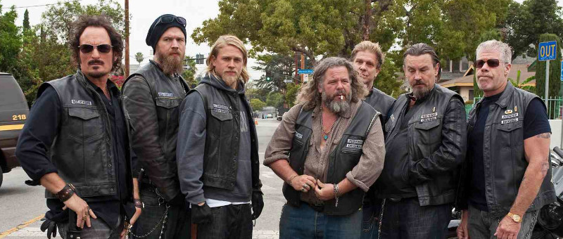
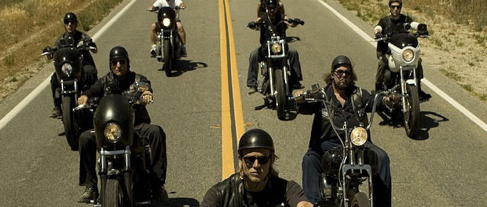

Sons of Anarchy
Sons of Anarchy (no Brasil, Filhos da Anarquia) é uma série de televisão dramática e de ação norte-americana criada por Kurt Sutter que foi ao ar de 2008 a 2014. Este programa segue a vida de um clube de motoqueiros foragidos que opera em Charming, uma cidade fictícia no Vale Central da Califórnia. A série é estrelada por Charlie Hunnam como Jackson "Jax" Teller, que inicialmente é o vice-presidente e posteriormente o presidente do clube. Depois de descobrir um manifesto escrito por seu falecido pai, John Teller, que anteriormente liderava o MC, ele logo começa a questionar o clube, a si mesmo e seus relacionamentos. Amor, fraternidade, lealdade, traição e redenção são temas consistentes em toda a série. Sons of Anarchy estreou em 3 de setembro de 2008, no canal de televisão FX. A terceira temporada da série atraiu uma média de 4,9 milhões de telespectadores semanais, tornando-se a série de maior audiência da FX na época, superando seus outros sucessos The Shield, Nip/Tuck e Rescue Me. As estreias das temporadas 4 e 5 foram as duas transmissões de maior audiência na história da FX.[2] A sexta temporada foi ao ar de 10 de setembro de 2013 a 10 de dezembro de 2013. A sétima e última temporada da série estreou em 9 de setembro de 2014. O episódio final da série estreou em 9 de dezembro de 2014.
Esta série explorou o vigilantismo, a corrupção governamental e o racismo, e descreveu um clube de motoqueiros fora da lei como uma analogia para a transformação humana. David Labrava, um membro real da filial de Oakland dos Hells Angels, serviu como consultor técnico e também interpretou o personagem recorrente Happy Lowman, o assassino do clube.
Em novembro de 2016, a FX anunciou o desenvolvimento de uma série spin-off, Mayans M.C., que conta a história do clube latino titular, que estreou sua primeira temporada em 2018.
Cada temporada envolve duas tramas paralelas que se entrelaçam e se sobrepõem: a primeira centra-se na vida pessoal de Jackson "Jax" Teller (Charlie Hunnam) e sua família, enquanto a segunda trata de SAMCRO (Sons of Anarchy Motorcycle Club, Redwood Original). SAMCRO está envolvido com o tráfico de armas em todo o oeste dos Estados Unidos e lida com muitas gangues rivais e os políticos e autoridades locais. Como Vice-Presidente do clube, Jax busca honrar o legado deixado pelo seu pai, fundador do clube.
Os Moto Clubes
Os Calaveras Motorcycle Club
Os Calaveras Motorcycle Club são um motoclube com sede na cidade de Lodi (Califórnia), cujos membros são hispânicos.
Devil's Tribe
Os Devil's Tribe Motorcycle Club (DTMC) são um motoclube com sede na cidade de Indian Hills (Nevada) mas também é ativa em Las Vegas. Sua marca é a cabeça do Diabo. Seu presidente é Júri, companheiro de John Teller na Guerra do Vietña, quem Jax carinhosamente se refere como seu tio. Seu vice-presidente é um homem chamado Needles.
Grim Bastards
Os Grim Bastards Motorcycle Club (GBMC) são um motoclube com sede na cidade de Lodi (Califórnia), cujos membros são de origem negra. Sua marca é um crânio com o punho cerrado e suas cores são laranja e preto. Os Grim Bastards são baseados em um motoclube verdadeiro, conhecido como 1DOWN MC, que usa as mesmas cores e que seu presidente lembra o personagem e TO, presidente dos Grim Bastards. Além disso, o presidente da 1DOWN MC participa da série como Sargento de Armas dos Grim Bastards, outros membros da 1DOWN MC também fazem participação na Grim Bastards.
Mayans
Os Mayans Motorcycle Club são uma gangue de motoqueiros que controla partes da Califórnia e Nevada. O Presidente do chapter de Oakland (Califórnia) é Marcus Álvarez, que também é presidente nacional do clube. Vários todos os membros dos Mayans são Mexicanos ou descendentes de latinos. Sua marca é um símbolo tribal maia e usam a frase "Los Asesinos de Dios". O principal negócio da quadrilha é o comércio de heroína e eles também estão envolvidos na prostituição. O clube tem inspiração no moto clube Mongols M.C.
Veículos
Os Sons usam motocicletas personalizadas da Harley-Davidson, geralmente da linha Dyna. O Estilo de customização das Harley Davidson da série, é conhecido com Club Bike, um estilo de customização que surgiu entre o final da década de 1980 e começo da década de 1990, nos clubes de motocicletas fora da lei, e que consiste basicamente em alterar o guidão da moto original de fábrica para T-Bar, o escapamento original para um escapamento 2 em 1, e outras modificações como adição de carenagem de farol (fairing), remoção de um ou ambos os retrovisores, e a remoção das luzes indicadoras de direção. Cada piloto customiza sua própria motocicleta ao seu estilo individual, mas geralmente seguindo o estilo Club Bike. No entanto, todos eles pintam suas motocicletas de preto. Normalmente as motos tem o Ceifador do clube, ou o "A" simbolizando o Anarquismo. Para os Prospects não são permitidos pintar suas motocicletas de preto e nem usar nenhuma marca.